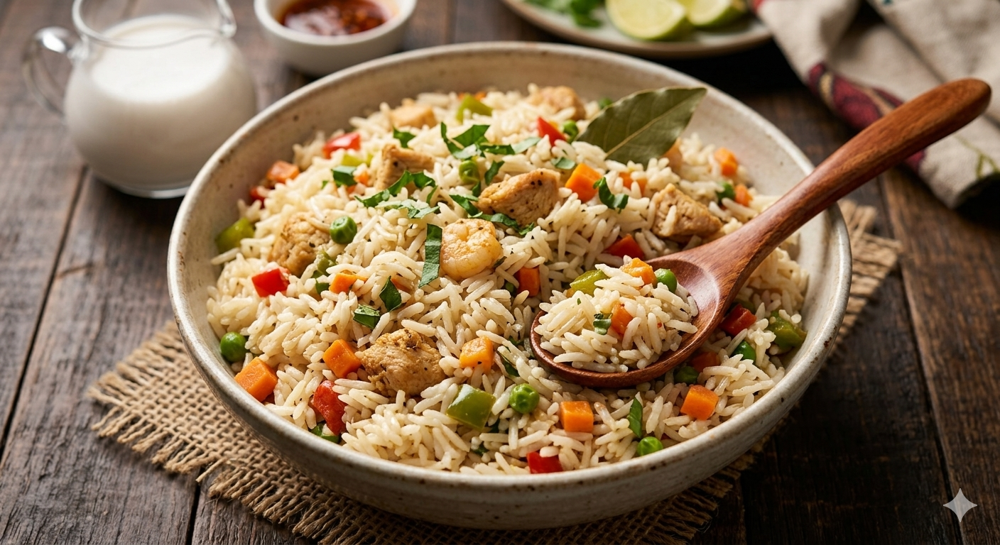

To prepare Coconut Rice, begin by parboiling the rice until it is halfway cooked, then rinse it in cold water to remove excess starch and stop the cooking process. In a separate pot, sauté onions, ginger, and garlic in a little oil until fragrant, then add your blended peppers, tomato paste (optional), and spices like curry and thyme. Once the base is fried, pour in the fresh coconut milk and meat stock, bringing the mixture to a gentle boil. Next, add the parboiled rice to the boiling coconut mixture, ensuring the liquid level is just enough to steam the rice without making it soggy. Cover the pot tightly—using foil under the lid helps trap steam—and cook on low heat until the rice absorbs all the liquid and becomes tender. In the final minutes, stir in your diced vegetables and cooked proteins, allowing them to steam with the rice for a fresh finish.